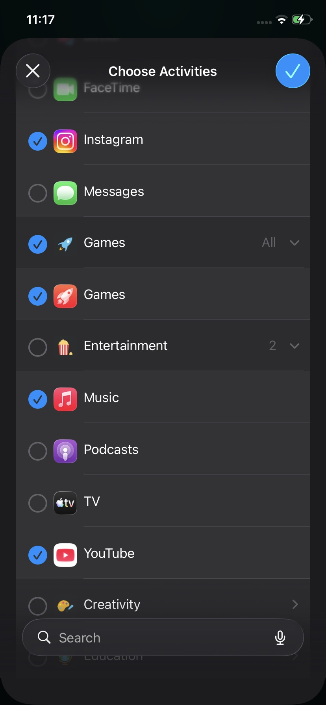
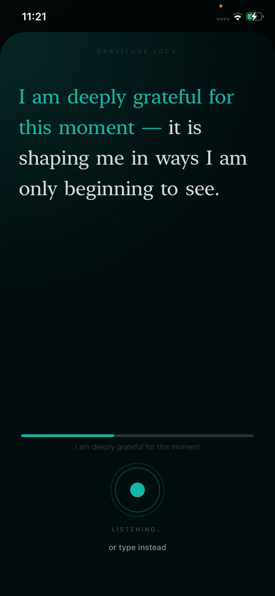
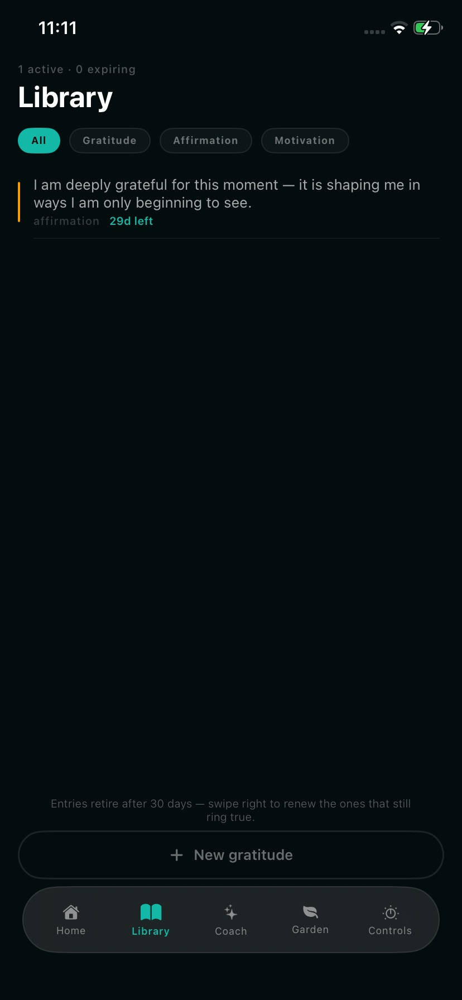

You already wrote the affirmation. You never say it.
Replace mindless scrolling with gratitude and affirmations.
Motivation starts the journey. Consistency builds it.
You said it for three mornings. Then the badge went red, and the note stayed in a folder. Reading more does not say it for you. A wallpaper does not say it for you.
Name the apps the thumb already knows.
Instagram. YouTube. The game. Not a new habit. The hours you already spend. That’s the only schedule that survives a busy day.

One sentence. Spoken or typed.
You were going to mindlessly scroll. Ten seconds first — one affirmation or one gratitude line. Then it opens.

The library fills. You didn’t sit down to journal.
Gratitude, affirmation, motivation — the lines you actually said. Next tap asks again. That’s two or three times today, without remembering.

Say it. Then the app.
Download on the App StoreStraight answers.
Is this manifestation?
The claim is smaller: you actually say the line, two or three times a day. Same hours as the apps you already open.
Do I have to speak out loud?
Speak or type. One sentence. It stays on the device — no account, no upload.
Why would I pay?
So the sentence happens at the moment you were going to scroll. Weekly $1.99, yearly $39.99, seven days free. Cancel in Settings → Subscriptions.
You were going to open it anyway.
Put the sentence in front of that tap.
Download on the App Store Live now · iPhone · 7-day trial